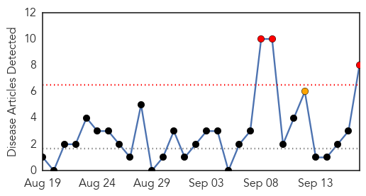
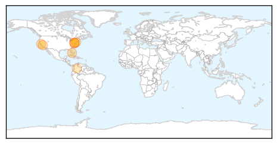

30 Day Trends
Web: 3 alerts, 1 warnings
Twitter: 1 alerts, 0 warnings
Top Articles:
- 0.978
- Enterovirus D-68 suspected in Erie
- 0.974
- Meningitis: Georgetown student from South Florida dies of apparent illness
- 0.965
- Georgetown student dies of 'apparent meningitis'
- 0.964
- Md. prepares for virus sickening hundreds of kids
- 0.958
- Georgetown Student Dies From Meningitis
- 0.946
- Georgetown says student’s meningitis death is ‘isolated case’
- 0.883
- Nursing student dies of meningitis after tweeting 'I think I'm dying'
- 0.805
- Andrea Jaime's tragic last tweet just days before she died from meningitis
Top Tweets:
-
No tweets found for Sep 17, 2014
Web/News Articles
Tweets

Article Locations
Article Confidences